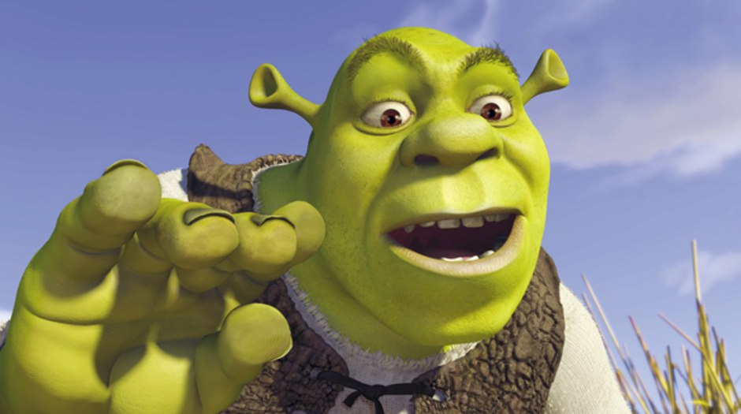
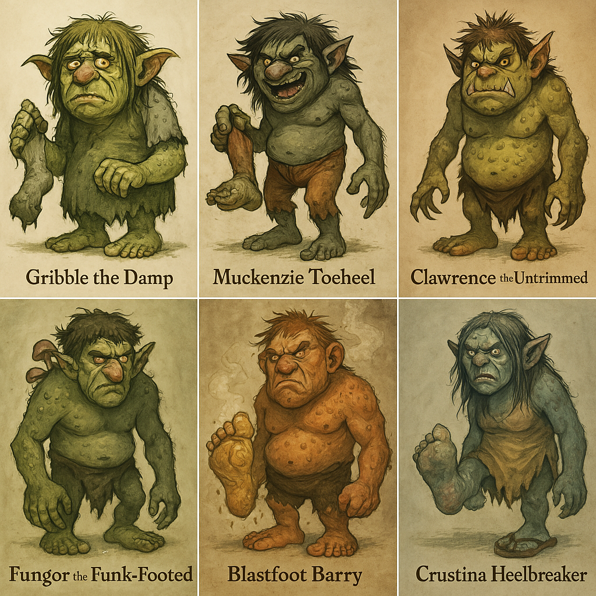

RESUME
Troll Feet
Created by Shrek

"Alright, gather 'round, ya soggy lot, ‘cause I’m only sayin’ this once.
Now, folks always ask me: ‘Shrek, what’s the worst thing you’ve seen in that mucky swamp of yours?’ And I’ll tell ya—it ain’t the rats. It ain’t the ogre boogers. No, no, it’s troll feet.
A troll’s foot is a crime against nature. We're talkin’ yellow-green talons that could slice bread. Nails so long they double as back scratchers... for OTHER trolls. And don’t even get me started on the smell. It’s like someone left a cheese wheel in a dragon’s armpit for six summers.
And the worst part? Trolls don’t wear shoes. Nah. They celebrate those crusty foot-hammers like they’re some badge of honor. I once saw a troll braid moss into his toe hair. Toe. Hair.
But hey, I’m not judgin’. We all got our... quirks. I’ve got ears like sausages and a back that sounds like a bag o’ gravel. But even I know when a toe needs a good scrubbing.
So, to all you trolls out there—wash your feet. Clip your claws. And for the love of the swamp, stop using fungus as foot lotion. That’s not hygiene. That’s a war crime.
Thank you. Now get outta my swamp."
Worst feet crimes
Sock Swamp Syndrome
"Wearing the same socks for three days straight until they start to smell like forgotten lunch meat. You know who you are."
- Barefoot in the Grocery Store
You’re not in a yoga studio. There are pineapples and pickle juice on that floor. Respect the tiles.
- Toenail Talons
Letting your toenails grow so long they clack when you walk. That’s not a fashion statement. That’s a foot sword.
- Toe Jam Jazz Festival
Neglecting the space between your toes until it becomes its own ecosystem. Wash. Between. Your. Toes.
- Troll feet
trolls responsible for these crimes
Gribble the Damp (reward: 2000$)
Muckenzie Toeheel (reward: 1$)
Clawrence the Untrimmed (reward: 90000$)
Fungor the Funk-Footed (reward: your mom)


Contact for Reward$$$
for more information:  Back to the top
Back to the top